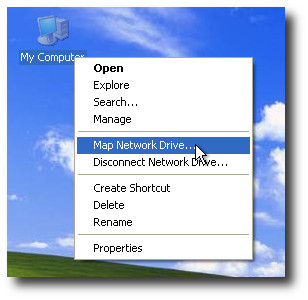
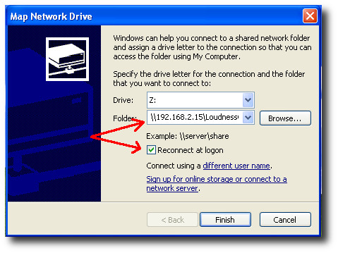
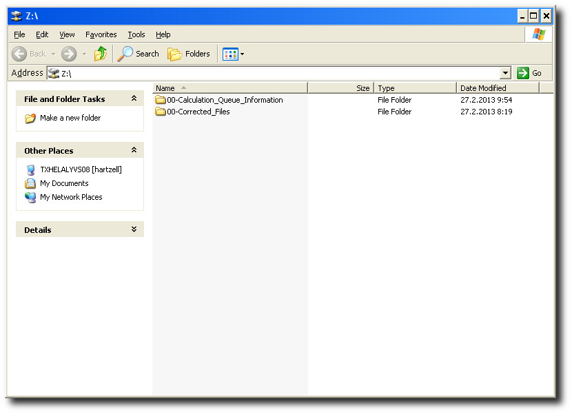

Mounting the server HotFolder on a windows xp workstation
Click "My Computer" - icon on the desktop with the right
mouse button and choose option "Map network drive" from the
menu that appears.

The next window offers a free drive letter to assign permanently to the
drive. In our example windows offers the letter Z:
Fill in the address of the server as shown on the picture. The address must
start with two backslashes and have the network share name
"\LoudnessCorrection" at the end of it.
Make sure to tick option "Reconnect at logon". When this
option is ticked you don't have to do anything to mount the server disk next
time you boot, since windows will do it automatically for you.
Click "Finnish".
Note: the ip - address shown on the picture is just for demonstration, get
the real address for your server from your it - staff.

Now windows mounts the disk and shows its contents on a window.
